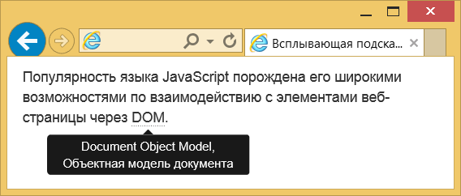

Всплывающая подсказка
Всплывающая подсказка может быть добавлена к любому элементу HTML с помощью универсального атрибута title. Тогда при наведении курсора на элемент появится текст, заданный внутри title. Оформление такого текста возложено на браузер и никак не меняется через стили. Поэтому часто применяют пользовательские подсказки сделанные через JavaScript. Их можно гибко настраивать по своему вкусу, добавляя возможности, которых лишена встроенная подсказка. Например, можно задавать положение подсказки относительно элемента.
Bootstrap переопределяет атрибут title, так что текст пишем в этом атрибуте, но также добавляем атрибут data-toggle со значением tooltip. Он будет сообщать скрипту, что следует изменить вид всплывающей подсказки. Также можно добавить и другие атрибуты управляющие видом, например data-placement указывает положение подсказки: left — слева; right — справа; top — сверху; bottom — снизу (пример 1). Учтите, что если для вывода подсказки недостаточно места, то она окажется за краем окна браузера.
Пример 1. Создание всплывающей подсказки
<p>Популярность языка JavaScript порождена его широкими возможностями
по взаимодействию с элементами веб-страницы через
<abbr title="Document Object Model, Объектная модель документа"
data-toggle="tooltip" data-placement="bottom">DOM</abbr>.</p>Перед закрывающим тегом </body> следует добавить также код скрипта, как показано ниже. Без этого наша подсказка работать не будет.
<script>
$(function () {
$('[data-toggle="tooltip"]').tooltip()
})
</script>Вид всплывающей подсказки показан на рис. 1.

Рис. 1. Всплывающая подсказка внизу текста
Настройки анимации
По умолчанию всплывающая подсказка появляется и исчезает плавно. Вы можете настроить скорость анимации или отключить её вовсе. С этой целью применяется два подхода. В первом случае мы добавляем к элементу атрибуты data-animation (true — включает анимацию; false — отключает её) и data-delay, как показано в примере 2.
Пример 2. Настройка анимации
<p>Популярность языка JavaScript порождена его широкими возможностями
по взаимодействию с элементами веб-страницы через
<abbr title="Document Object Model, Объектная модель документа"
data-toggle="tooltip" data-placement="bottom" data-animation="false"
data-delay='{"show": 100, "hide": 1000}'>DOM</abbr>.</p>Атрибут data-delay задаёт время задержки перед отображением и сокрытием текста в миллисекундах. Если значение одно, то и задержка будет одинакова. Но можно написать структуру как показано в данном примере и отдельно управлять временем задержки отображения и сокрытия.
Во втором подходе параметры анимации добавляются напрямую в скрипт.
$(function () {
$('[data-toggle="tooltip"]').tooltip({
animation: false,
delay: {"show": 100, "hide": 1000}
})
})
Все материалы сайта доступны по лицензии Creative Commons «Attribution-NonCommercial» («Атрибуция — Некоммерческое использование») 4.0 Всемирная, если не указано иное.